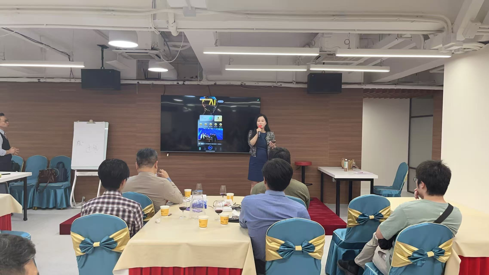
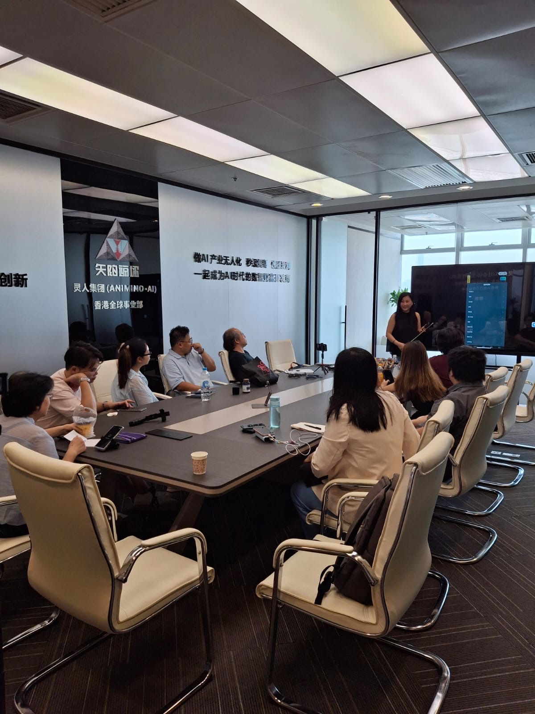
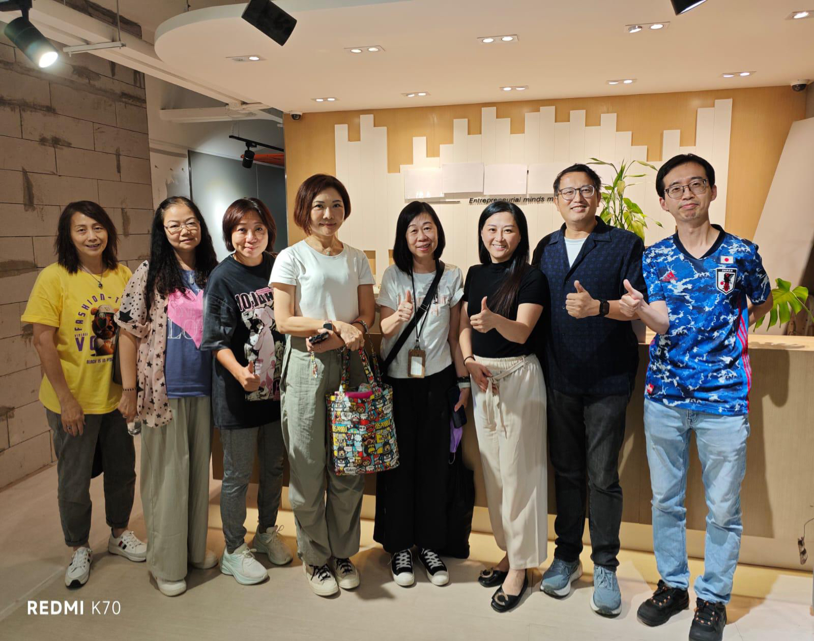
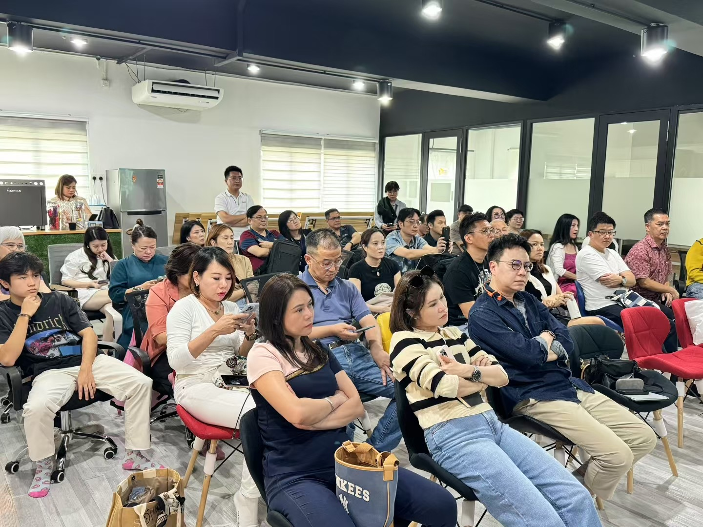

LEVEL 01
初级
建立基础、资料库与品牌起点。
01Obsidian 资料库建立第二大脑／知识库
02Social Media 账号开设建立品牌矩阵
03Facebook Social Media社交媒体营销＋获客
 FION TANSMARTECH AIThink AI. Think Smartech AI
FION TANSMARTECH AIThink AI. Think Smartech AI
不是追逐更多工具，而是找到一套适合你的 AI 方法，把经验变成内容、影响力与可以持续的成果。
预约课程咨询 ↗从课堂实作、现场分享，到同学一起完成 AI 应用；每一张照片，都是学习真正发生的记录。




课程由基础、内容自动化、视频生产力、办公流程、知识库到网站与智能客服，逐章建立可以实际使用的 Codex 能力。
课程分为初级、中级与高级三个阶段。你可以从当前最需要的一步开始，也可以按完整路径逐级建立自己的 AI 工作系统。
建立基础、资料库与品牌起点。
进入创作、内容生产与多平台传播。
把 AI 变成企业、业务与自动化系统。
这是一套为老板、创业者、顾问、讲师、教练、专业人士与想打造个人影响力的人设计的实战课程。
从定位、内容、工具到自动化工作流，我们一起把你的经验整理成有方向的个人品牌，并建立可以持续执行的 AI 工作方式。
告诉我们你目前的工作场景和目标，Smartech AI Academy 会协助你选择适合的课程路径。